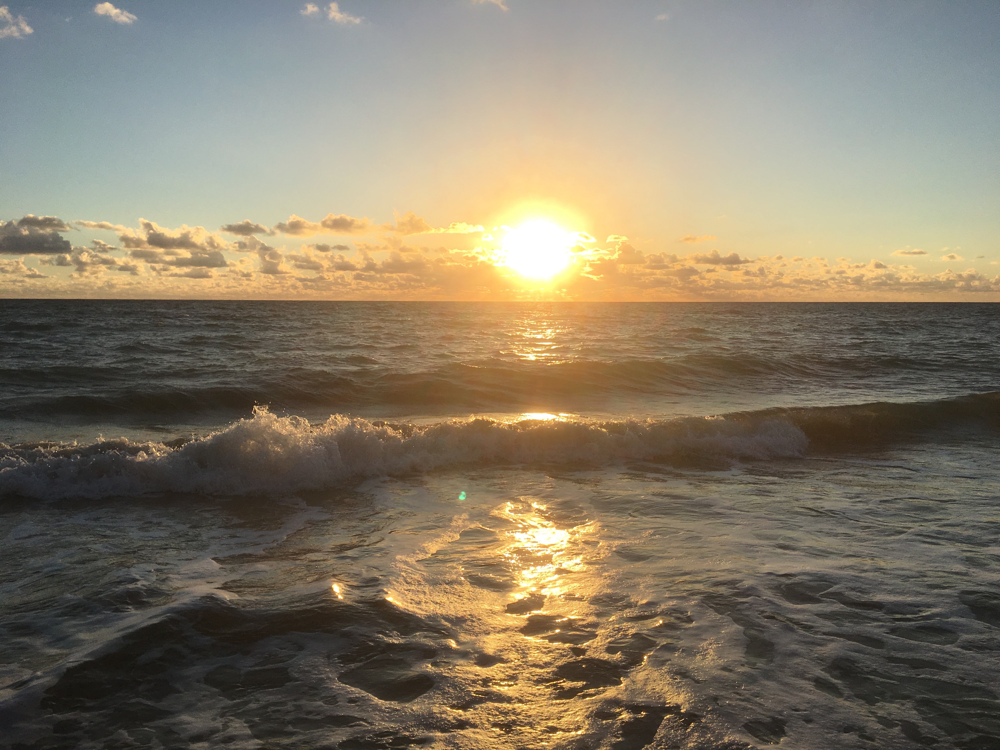

About us
Some lists in this article
- Milk
- Sugar
- Coffee
Iljušin Il-62 (ven. Ильюшин Ил-62, Nato-raportointinimi Classic) on Neuvostoliitossa kehitetty Iljušinin valmistama pitkän matkan matkustajalentokone. Se on ensimmäinen neuvostoliittolainen varsinainen pitkän matkan matkustajakonetyyppi, ja sen ensilento oli 2. tammikuuta 1963. Aeroflot lensi konetyypin ensimmäisen kaupallisen lennon 8. syyskuuta 1967 ja ensimmäisen kansainvälisen lennon viikkoa myöhemmin.
Koneesta valmistettiin myös käyttötaloudellisempaa Il-62M-tyyppiä Solovjov-moottoreilla ja siivistään vahvistettua keskipitkän matkan Il-62MK-tyyppiä.
Konetta valmistettiin 292 kappaletta. Konetyyppiä on käytetty Venäjän lisäksi muun muassa useissa Itä-Euroopan maissa sekä Kuubassa, Mosambikissa ja Pohjois-Koreassa.
Sen suurimpia käyttäjiä olivat Aeroflot, jonka laivastossa oli jossakin vaiheessa koneista 213, sekä Domodedovo Airlines, jolla oli 45 konetta.
- Testing
- Testing
- Testing